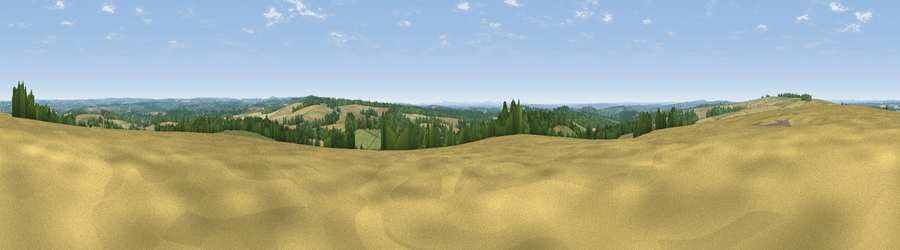

Viewpoint near Cheriton
#14057 in England · top 10% of its area beats it · near Cheriton · access?Where it is
The exact computed spot (SU 55125 26025). Click the marker for map links.
Public access: no public right of way or access land is recorded at this exact spot — it may be on private land. Computed from Natural England's CRoW access layer and OpenStreetMap rights of way — not the legal definitive map. Always verify locally.
The view, rendered

A 360° render of this exact spot computed from the terrain model, tree cover and land cover — summer colours, afternoon light, calibrated against photographs of famous viewpoints. Real trees, hedges and buildings will differ in detail.
The panorama
Grey silhouette: terrain skyline in each direction (720 bearings, Earth curvature and refraction included). Dashed green: skyline with trees (+15 m) and buildings (+8 m) as obstacles. Blue strip: how far the ground is visible on each bearing.
Where the view opens
Wedge length = distance to the farthest visible ground on that bearing (vegetation-aware). Rings at 10, 25 and 50 km.
What fills the view
49% cropland · 27% woodland · 22% grassland · 1% built-up
Angular shares of the visible panorama (visual magnitude), not map area. Landscape diversity 0.48 (0–1 Shannon).
Key numbers
More beautiful places nearby
The staircase of upgrades: each row has a higher view potential than everything closer. Driving times are estimates from straight-line distance, calibrated against real road routing — check an actual route before setting out.
| Place | Direction | Drive | Score |
|---|---|---|---|
| Cheesefoot Head | NW · 3 km | ~6 min | 61.0 |
| Viewpoint near Chilcomb | NW · 4 km | ~8 min | 63.3 |
| Beacon Hill | SE · 6 km | ~13 min | 71.7 |
| Viewpoint near Meonstoke | ESE · 10 km | ~20 min | 74.8 |
| Viewpoint near Buriton | ESE · 17 km | ~30 min | 75.3 |
| Viewpoint near Buriton | ESE · 18 km | ~31 min | 80.0 |
| Beacon Hill | ESE · 27 km | ~43 min | 85.8 |
| Mottistone Down | SSW · 44 km | ~64 min | 87.2 |
51.03095, -1.21527 · source: screening · position refined by local search. Computed location — check access rights before visiting.